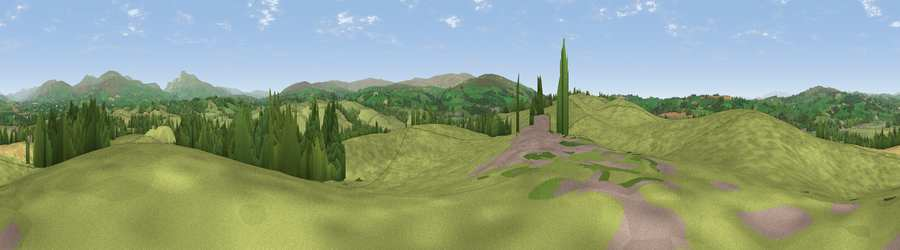

Viewpoint near Melling
#10991 in England · top 36% of its area beats it · near MellingThe view, rendered

A 360° render of this exact spot computed from the terrain model, tree cover and land cover — summer colours, afternoon light, calibrated against photographs of famous viewpoints. Real trees, hedges and buildings will differ in detail.
The panorama
Grey silhouette: terrain skyline in each direction (720 bearings, Earth curvature and refraction included). Dashed green: skyline with trees (+15 m) and buildings (+8 m) as obstacles. Blue strip: how far the ground is visible on each bearing.
Where the view opens
Wedge length = distance to the farthest visible ground on that bearing (vegetation-aware). Rings at 10, 25 and 50 km.
What fills the view
85% grassland · 11% woodland · 3% cropland
Angular shares of the visible panorama (visual magnitude), not map area. Landscape diversity 0.23 (0–1 Shannon).
Key numbers
More beautiful places nearby
The staircase of upgrades: each row has a higher view potential than everything closer. Driving times are estimates from straight-line distance, calibrated against real road routing — check an actual route before setting out.
| Place | Direction | Drive | Score |
|---|---|---|---|
| Windy Bank | SW · 2 km | ~4 min | 65.9 |
| Viewpoint near Wray | SSW · 5 km | ~11 min | 72.0 |
| Viewpoint near Wray | SSW · 6 km | ~12 min | 73.8 |
| Viewpoint near Over Kellet | W · 8 km | ~17 min | 77.4 |
| Warton Crag | WNW · 11 km | ~21 min | 83.2 |
| Viewpoint near Grange-over-Sands | WNW · 22 km | ~37 min | 83.4 |
| Viewpoint near Cartmel | WNW · 26 km | ~42 min | 87.0 |
| Viewpoint near Cartmel | WNW · 26 km | ~42 min | 87.2 |
54.12768, -2.60937 · source: screening · position refined by local search. Computed location — check access rights before visiting.